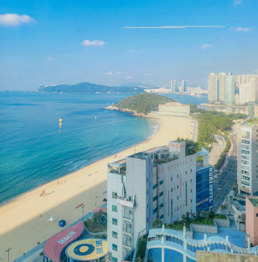
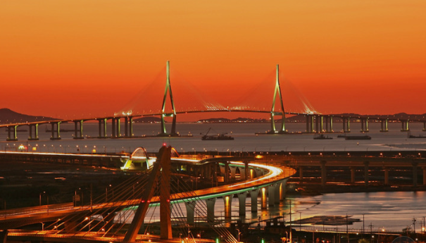
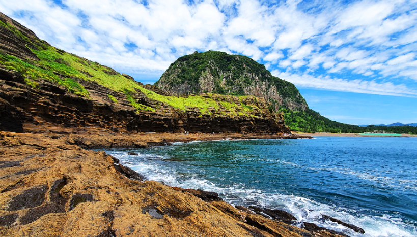
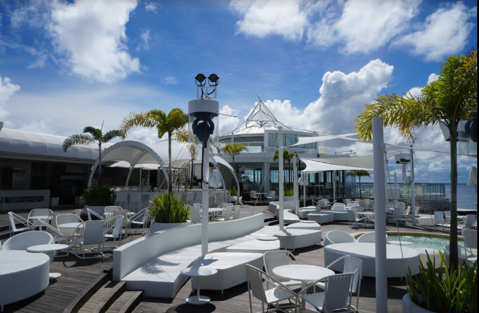
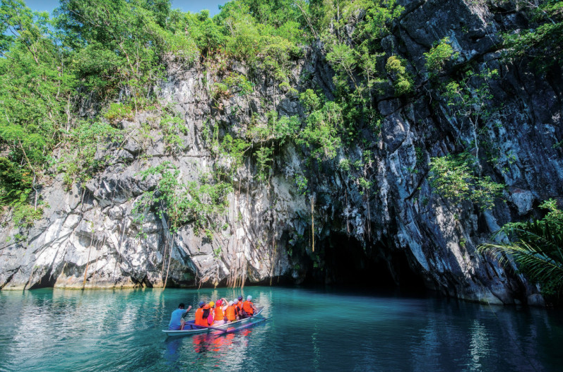
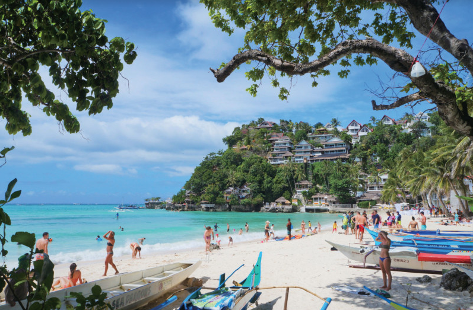
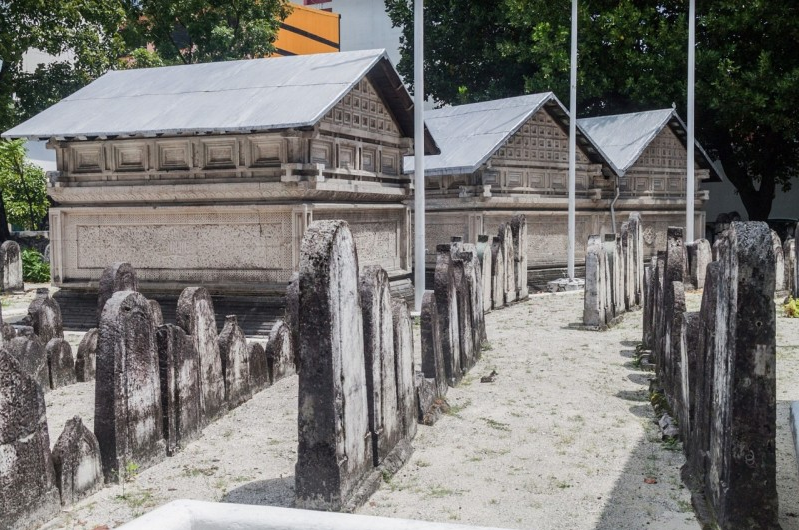
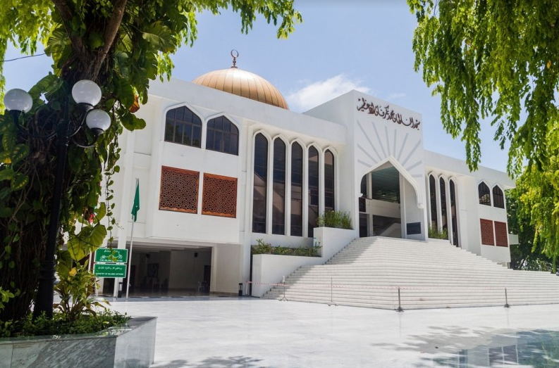
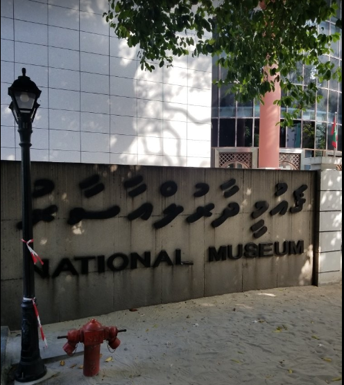
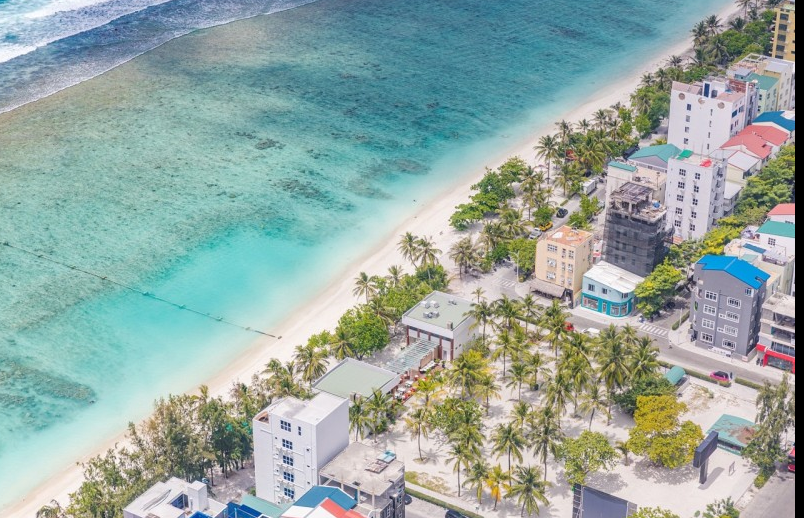

부산(우리나라 제2의 수도 부산광역시)

인천(살짝 비릿한 바다향이 매력적인 인천광역시 지리적 특징을 잘 이용하여 내륙과 해안 지역의 관광이 두루 발달한 곳이다.)

제주도(섬 전체가 하나의 거대한 관광자원인 제주도)

세부(세부는 필리핀에서 두 번째로 큰 대도시이며 리조트가 잘 발달된 대표적 관광지 중 하나이다.)

팔라완(개발의 손이 닿지 않은 에메랄드빛 바다와 거대한 석회암벽이 장관을 이루는 히든플레이스다.)

마닐라(마닐라는 필리핀의 수도로 스페인 점령기의 문화가 남아 있으며 상업과 금융이 발달해 있다.)

보라카이(야자수가 늘어선 해변에 새하얀 모래, 에메랄드빛 투명한 바다로 유명한 휴양지다.)


후쿠루 미스키(2008년 유네스코 세계 문화 유산으로 지정된 말레의 대표 모스크)

맛지드 앨-술탄 무하메드 타쿠루파누 앨-아잠(1984년에 건립되어 현재 몰디브에서 가장 큰 규모의 모스크)

몰디브 국립 박물관(유산들이 전시되어 있는 박물관)
